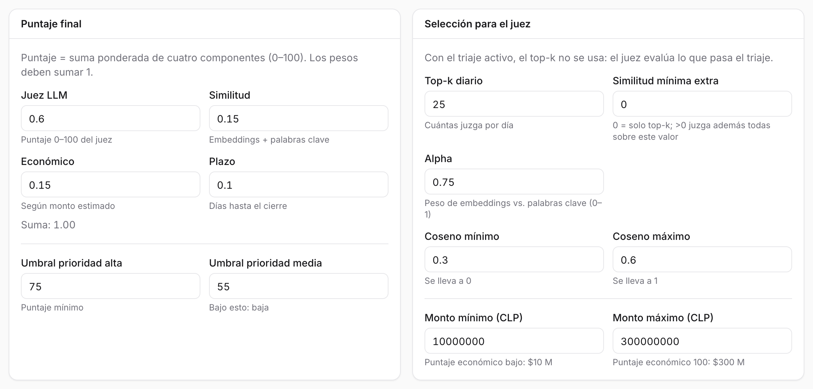
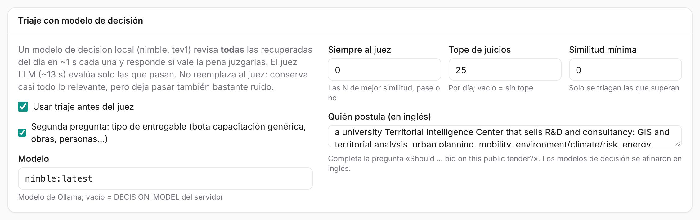
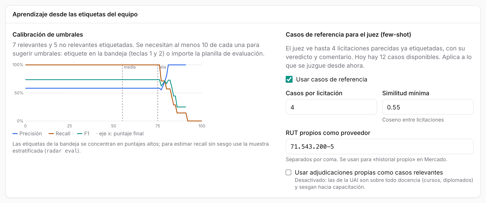
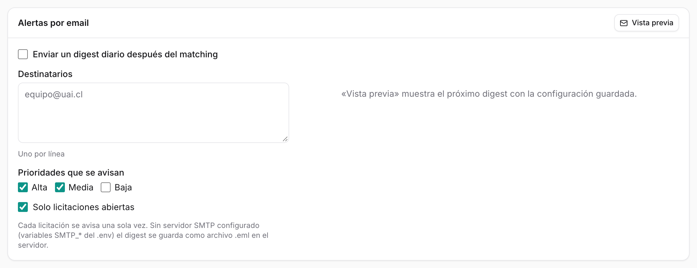
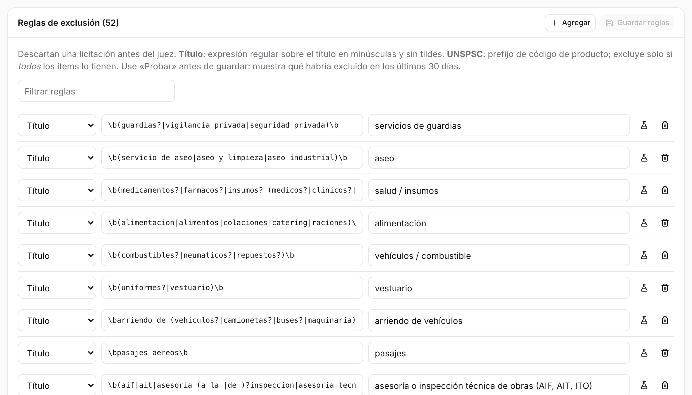

17 Configuración
Configuración reúne los criterios de la unidad: cómo se puntúa una licitación, cuántas llegan al juez, cómo aprende de las etiquetas, a quién se avisa y qué se excluye sin mirar. Disponible para el rol admin. Es una sola página con seis tarjetas; las cinco primeras se guardan con Guardar cambios arriba a la derecha y las reglas tienen su propio botón.
17.1 Qué hay en la pantalla
17.1.1 Puntaje final

Los cuatro pesos del puntaje final y los dos umbrales de prioridad (Modelos de priorización).
| Campo | Valor del CIT | Qué controla |
|---|---|---|
| Juez LLM | 0,60 | Peso del puntaje 0–100 del juez |
| Similitud | 0,15 | Peso de la cercanía (embeddings + palabras clave) |
| Económico | 0,15 | Peso del monto estimado |
| Plazo | 0,10 | Peso de los días hasta el cierre |
| Umbral prioridad alta | 75 | Puntaje mínimo para alta |
| Umbral prioridad media | 55 | Bajo esto, la licitación es baja |
Los pesos deben sumar 1; si no, Guardar cambios queda desactivado.
17.1.2 Selección para el juez
| Campo | Valor del CIT | Qué controla |
|---|---|---|
| Top-k diario | 25 | Cuántas juzga por día si el triaje está apagado |
| Similitud mínima extra | 0 | Con valor > 0, juzga además todas las que lo superen |
| Alpha | 0,75 | Peso del significado frente a las palabras clave |
| Coseno mínimo / máximo | 0,30 / 0,60 | Rango del coseno que se reescala a 0–1 (Búsqueda por significado) |
| Monto mínimo / máximo | $10 M / $300 M | Bajo el mínimo, puntaje económico bajo; sobre el máximo, 100 |
17.1.3 Triaje con modelo de decisión

El triaje revisa todas las licitaciones recuperadas del día con un modelo pequeño (~1 s cada una) y solo las que pasan van al juez (~13 s) (Modelos de decisión).
- Usar triaje antes del juez: activado en el CIT.
- Segunda pregunta: tipo de entregable: descarta capacitación genérica, obras, contratación de personas y operación.
- Modelo:
nimble:latest; vacío usa elDECISION_MODELdel servidor. - Siempre al juez (0): las N de mejor similitud se juzgan aunque el triaje diga que no.
- Tope de juicios (25 por día): vacío es sin tope.
- Similitud mínima: solo se trían las que la superan.
- Quién postula (en inglés): completa la pregunta «Should … bid on this public tender?». Va en inglés porque los modelos de decisión se afinaron en ese idioma.
17.1.4 Aprendizaje
Usa las etiquetas del equipo de dos formas (El ciclo de retroalimentación).
Calibración de umbrales. Muestra cuántas relevantes y no relevantes hay etiquetadas y, con al menos diez de cada una, dibuja la precisión, el recall y el F1 para cada umbral posible, con los umbrales actuales marcados. Sugiere el umbral de media con mejor F1 y el de alta con precisión ≥ 80 %. Usar sugerencia los copia al formulario, pero no se aplican hasta guardar. Abajo indica en qué paso quedaron las relevantes que el sistema no priorizó (regla, triaje, juez, tope).

Casos de referencia para el juez. Activa o desactiva los casos, cuántos ve el juez por licitación (4) y la similitud mínima entre licitaciones (0,55). Aquí también se ingresan los RUT propios como proveedor, que alimentan el «historial propio» del mercado, y la opción de usar las adjudicaciones propias como casos relevantes. Esta opción viene apagada: las adjudicaciones de la UAI son sobre todo docencia y sesgarían al juez hacia capacitación.
17.1.5 Alertas por email

La configuración del correo con lista fija de la unidad: si se envía, los destinatarios (uno por línea), las prioridades que se avisan y si solo van las abiertas. Vista previa muestra el próximo correo sin marcar nada como enviado. Los correos personales, uno por persona, se coordinan en Operación.
17.1.6 Reglas de exclusión

El CIT tiene hoy 52 reglas. Las reglas descartan una licitación antes del triaje y del juez. Hay dos tipos:
- Título: expresión regular sobre el título en minúsculas y sin tildes, por ejemplo
\b(compra|adquisicion)\b. - UNSPSC: prefijo de código de producto. Solo excluye si todos los ítems lo tienen, y solo mira códigos de 8 dígitos.
Cada regla tiene una nota, que es lo que se muestra como motivo en Excluidas por filtro. El buscador de arriba filtra la lista.
17.2 Cómo se hace
17.2.1 Cambiar pesos o umbrales
- Editar los valores en Puntaje final.
- Guardar cambios.
- En el aviso verde, presionar Recalcular últimos 14 días (sin LLM). Reaplica los puntajes en segundos sin volver a llamar al juez; el avance se ve en Operación.
17.2.2 Aplicar la calibración sugerida
- Etiquetar al menos diez relevantes y diez no relevantes en la bandeja.
- En Aprendizaje, revisar la curva y la sugerencia.
- Usar sugerencia → Guardar cambios → Recalcular últimos 14 días.
17.2.3 Cambiar el modelo de triaje
- Descargar el modelo nuevo en Ollama (
ollama pull …). - Escribir su nombre en Modelo y guardar.
- Para días pasados, reprocesar desde la línea de comandos con
radar match --date … --retriage.
17.2.4 Agregar una regla de exclusión
- En Reglas de exclusión, presionar Agregar.
- Elegir el tipo, escribir el valor y una nota clara.
- Presionar el matraz (Probar en los últimos 30 días). Muestra cuántas habría excluido, ejemplos y, en rojo, cuáles son hoy oportunidades alta o media.
- Si no bota nada bueno, Guardar reglas.
La regla de oro: excluir solo lo inequívoco. Lo dudoso lo resuelven el triaje y el juez.
17.2.5 Quitar una regla
Presionar el basurero de la fila y Guardar reglas. Las licitaciones que esa regla excluía se vuelven a evaluar al reprocesar los días.
17.3 Bitácora
| Fecha | Cambio | Commit |
|---|---|---|
| 28-oct-2026 | Pesos, umbrales y reglas viven solo en cit.yaml; se cambian editando el archivo. |
77f0a42 |
| 29-oct-2026 | Pantalla Configuración: pesos, umbrales, selección para el juez y alertas con vista previa, y editor de reglas con Probar. | 12887b1 |
| 29-oct-2026 | Tarjeta Aprendizaje: curva de calibración, sugerencia de umbrales y casos de referencia para el juez. Las adjudicaciones propias quedan apagadas por defecto. | 751cfab |
| 30-oct-2026 | Tarjeta Triaje: el modelo nimble filtra antes del juez. En la referencia de 297 licitaciones: recall 96 % y precisión 52 %, contra 95 % y 35 % del juez solo. |
1b163ff |
| 30-oct-2026 | Las reglas UNSPSC solo miran códigos de 8 dígitos. Los códigos internos de 9 dígitos del MOP hacían que la regla 10 (plantas y animales) excluyera 111 consultorías, entre ellas un estudio de evaluación de impacto de $358 M. |
ae4c702 |
| 30-oct-2026 | Nueva regla de título para inspección técnica de obras (AIF, ITO). La precisión del triaje sube a 54 %. | e780d49 |
| 30-oct-2026 | Configuración exige rol admin. | 263246a |
- Registrar quién cambió un peso, un umbral o una regla, y cuándo. pendiente